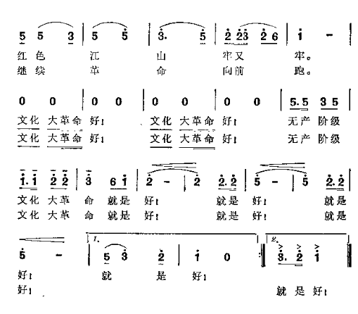
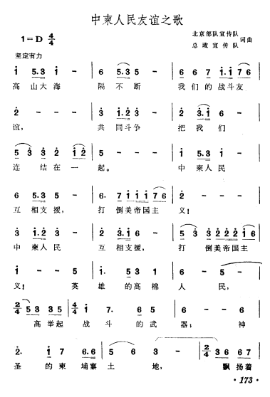
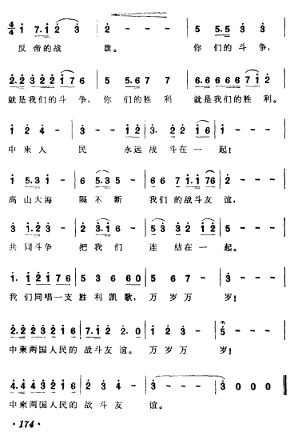
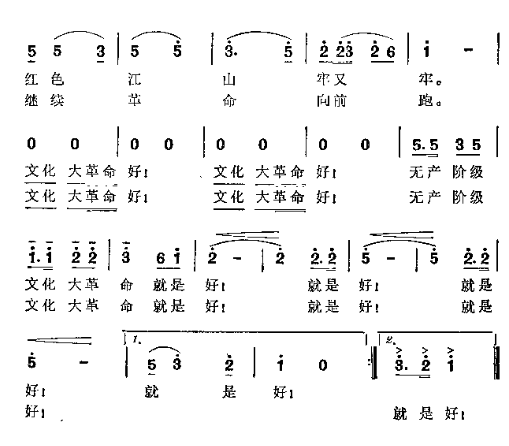
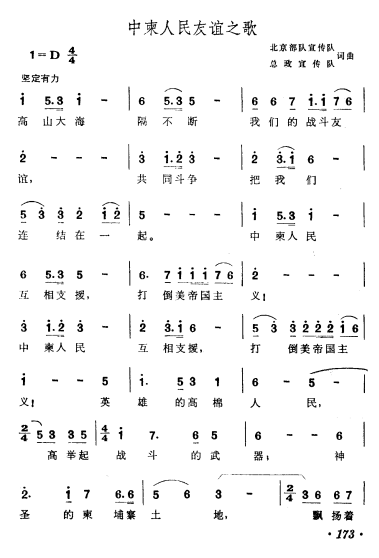
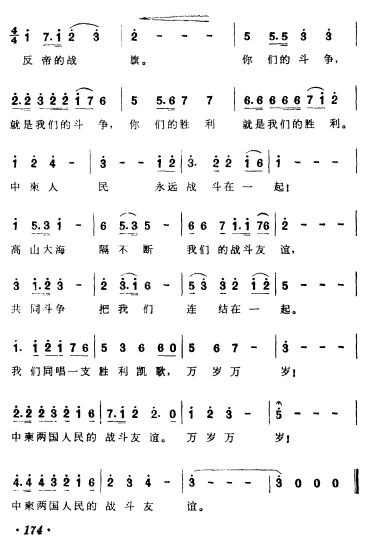

注意：“誓把修根剷除掉”和“勝利凱歌衝雲霄”的差別。


歌譜文件（書星網）：https://mega.nz/folder/3WAz3I6A#OXWCWh84Qj9-k7D7CVSYWw
音樂文件（根據網絡收錄）：https://mega.nz/folder/6DBmUS5B#4alObAceQi1scoDHAwcfxQ

注意：“誓把修根剷除掉”和“勝利凱歌衝雲霄”的差別。


歌譜文件（書星網）：https://mega.nz/folder/3WAz3I6A#OXWCWh84Qj9-k7D7CVSYWw
音樂文件（根據網絡收錄）：https://mega.nz/folder/6DBmUS5B#4alObAceQi1scoDHAwcfxQ
《無產階級文化大革命就是好》分為北京五月印刷版和河南六月印刷版，前者是“誓把修根剷除掉”，後者是“勝利凱歌衝雲霄”。